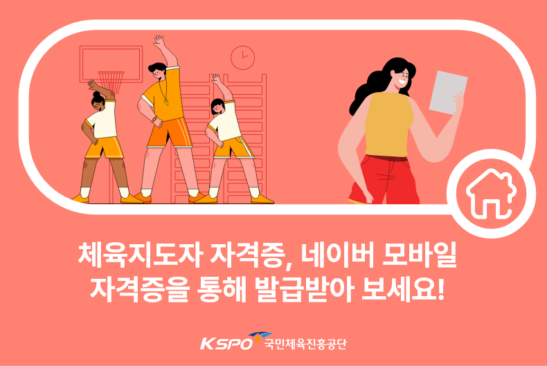

새소식
- 공지사항
- N
- 2024 VR올림픽 슈퍼리그 개최 및 참여 신청모집
- 전국초등학생 가장현실 스포츠 네트워크 대전인 '2024 VR올림픽'...
- 자세히 보기 +
- 공지사항
- 서울올림픽 개최36주년 기념 "88하게 그린페스티벌"
- RUNCOP과 함께하는 러닝프로그램 올림픽공원 평화의 광장
- 자세히 보기 +
- 공지사항
- 2024 대국민 스포츠활동 장려미디어 챌린지 공모전
- 제62회 스포츠의 날을 맞아, 전 국민이 건강해질수 있도록 스포츠를 널리 장려하고자...
- 자세히 보기 +
- 공지사항
- [체육인복지]2024년
하반기 국내대학원 교육 - 국내대학원 교육지원금 안내 국가대표 선수.지도자로서 국내의 대학원에..
- 자세히 보기 +
2024년 8/9월호
KSPO 매거진이 발행되었습니다.
스포츠복지 서비스
-
1/6
스포츠강좌이용권
(대상) 유청소년/장애인
국민 누구나 차별 없이 하고 싶은 운동을 마음껏 배울 수 있도록 저소득층 유·청소년의 운동프로그램 수강료를 지원하는 사업입니다.
1644-7110
-
2/6
국민체력100
체력이 중요한 유·청소년부터 초 고령사회를
살아가는 노년층까지 1:1 맞춤형 체력측정과
운동 처방으로 건강 100세 시대를 열어갑니다.02-410-1489
-
-
4/6
스포츠산업
스포츠산업의 고부가가치 창출과 신성장 동력화를 위하여 스포츠산업체 대상 성장단계별 육성사업과 함께 금융, R&D, 인력을 지원합니다.
1566-4573
-

-